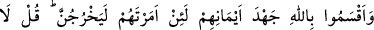
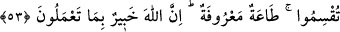

(r.h.) der ki: “Allah’a dâvet hakîkat ile, Rasûl (s.a.)’e dâvet ise nasihat iledir. Allah’ın
dâvetine icâbet etmeyen kâfir olur, Rasûl’ün dâvetine icâbet etmeyen ise dalâlete düşer.
İcabet etmemenin sebebi ise (kalplerde bulunan) hastalıktır.
İmam Râğıb der ki: “__WORD__ (hastalık)”, insanın kendine özgü itidâlden çıkmasıdır. Bu
da iki çeşittir: Birincisi “Hastaya da güçlük yoktur” (en-Nûr, 24/61) âyetinde
zikredildiği şekilde bedenle ilgili hastalıktır. İkincisi ise “Onların kalplerinde
hastalık vardır; Allah da onların bu hastalığını çoğaltmıştır.” (el-Bakara, 2/10)
âyetinde zikredilen cehâlet, korkaklık, cimrilik, nifak ve diğer ahlâkî düşüklüklerden
ibârettir. Nifak, küfür ve benzeri çirkin huylar hastalığa benzetilmiştir. Bu ya bedenin
tam olarak tasarrufuna mâni olan bir hastalık gibi bu huylardan da güzellikleri idrâk
etmeye engel olmaları sebebiyledir. Ya da bu huylar “âhiret yurduna gelince, işte asıl
hayat odur.” (el-Ankebût, 29/64) âyetinde bahsedilen uhrevî hayâtı kazanmaya engel
oldukları içindir. Yahut hasta bedenin zararlı şeylere meyletmesi gibi bu huylar
sebebiyle nefsin de bâtıl îtikadlara meyletmesi yüzündendir.”
Bir hadiste: “Sizden hiçbiriniz, hevasını benim getirdiklerime tâbi kılmadığı sürece
îman etmiş olamaz.”[178] buyrulmuştur. Yâni kul nefsinin meyillerini, Peygamber
(s.a.)’in getirdiği hüküm ve kâidelere boyun eğdirmediği sürece kâmil bir îmâna
erişemez ve îmânın derecelerini tamamlayamaz. Sonra tâat ve icâbetin hakîkati,
Allah’tan başka her şeyi terk etmek ve O’nun dışındaki her şeyden yüz çevirmektir.
Allah’tan başkasına yönelen pek çok âfete maruz kalır: Kalbinin mizacı, Allah ve
âhiret sevgisi gibi Allah’ın insanları yaratırken tabiatlarına yerleştirdiği fıtrî
duygulardan uzaklaşır. Felsefeciler, tabîatçılar, dehriler ve diğerleri gibi sapık
fırkalardan bid’at ehli kimselerin sözleriyle dinde şüpheye düşer. Allah ve Rasûlü’nün
kendisine, ruhunu Hakk’ın ahlâkıyla süsleyip O’na kavuşmak için nefsi tezkiye ve kalbi
tasfiyeye yönlendirecek dünyayı terki, nefsi hevaya tâbi olmaktan alıkoymayı ve pek çok
riyâzat ve mücahede şeklini emretmesinden sonra “Güzel amel işleyenlere daha güzel
mükâfât (cennet), bir de fazlası vardır.” (Yunus, 10/26) âyetinde vaad ettiklerini
yerine
getirmemelerinden
ve
haklarını
edâ
etme
konusunda
kendisine
zulmedeceklerinden korkar. Bu kimse bilmiyor mu ki, Allah zerre miktarı kadar bile
zulmetmez!
53. (Münâfıklar), sen hakîkaten kendilerine emrettiğin takdirde mutlaka
(savaşa) çıkacaklarına dâir, en ağır yeminleri ile Allah’a yemin ettiler. De ki: Yemin
etmeyin. İtâatiniz malûmdur! Bilin ki Allah, yaptıklarınızdan haberdardır.